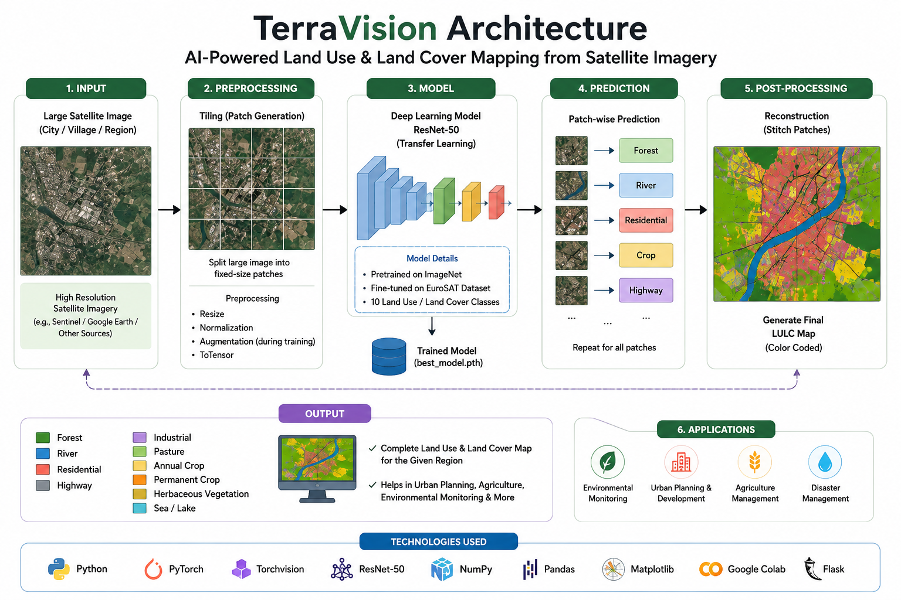

Architecture, dataset, training summary, and known limitations.
ResNet50 (50-layer deep convolutional neural network), pretrained on ImageNet and fine-tuned via two-phase transfer learning: first the final classification layer only, then the full network at a lower learning rate. The final layer is replaced with a 10-way linear classifier matching EuroSAT's classes. For serving, the trained PyTorch model is exported once to TorchScript and executed inside the Java backend via Deep Java Library's PyTorch engine -- no Python process runs in production.

EuroSAT -- 27,000 labeled Sentinel-2 satellite image patches across 10 land-use/land-cover classes (AnnualCrop, Forest, HerbaceousVegetation, Highway, Industrial, Pasture, PermanentCrop, Residential, River, SeaLake). Each source patch is 64x64 pixels at 10 m ground resolution.
Full training run, per-class precision/recall, and the confusion matrix are in
notebooks/LULC_Part1_Image_Classification.ipynb in the project repository.
Domain shift is real and expected. This model was trained exclusively on Sentinel-2 satellite tiles -- top-down, 10 m/pixel, atmospherically-corrected multispectral imagery reduced to RGB. It was never shown ground-level photos, drone footage, aerial photography at different resolutions, or imagery from other sensors.
Uploading anything outside that distribution (a phone photo, a screenshot, a different satellite's
imagery) will typically produce a low top-1 probability spread across several classes. Rather than
hide this, the API flags any prediction below a configurable confidence threshold as
lowConfidence: true with an explicit warning message, both in the JSON response and
in the UI.
Other known constraints: the model classifies a whole tile as one class (no per-pixel segmentation or object detection), input images are resized/letterboxed to 224x224 which can lose fine detail on very large images, and performance on land-cover types outside Europe (where EuroSAT was collected) has not been separately validated.